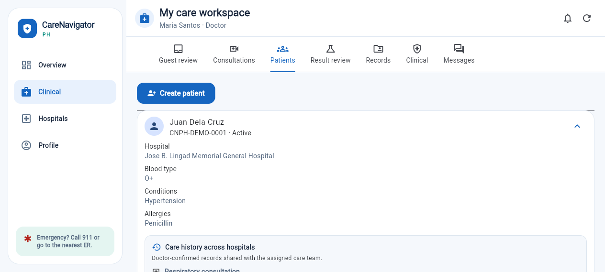
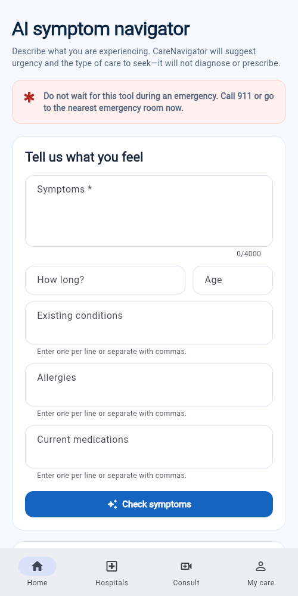
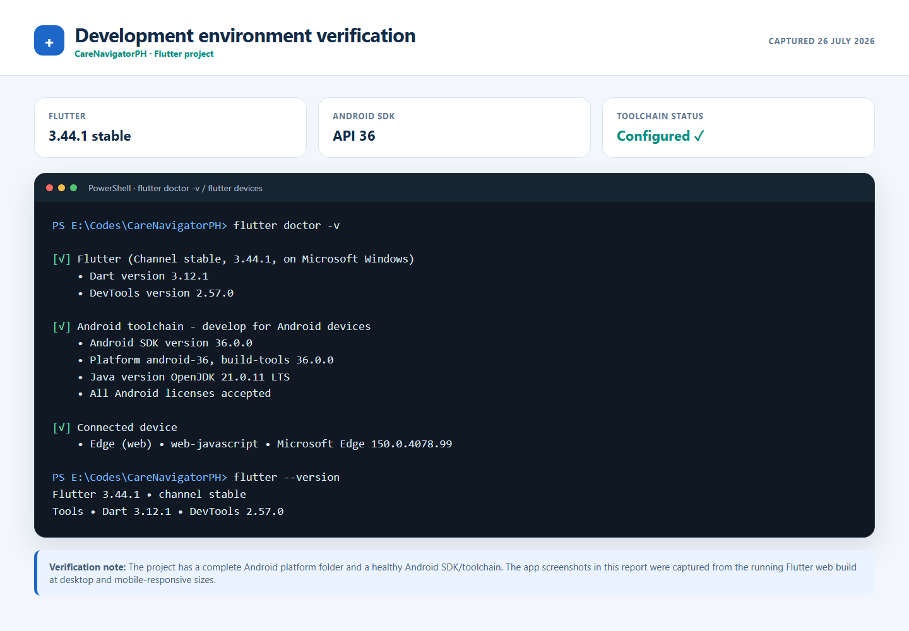
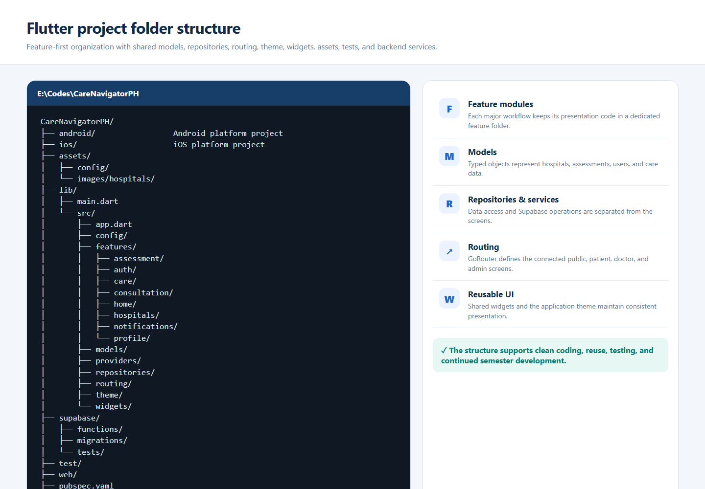
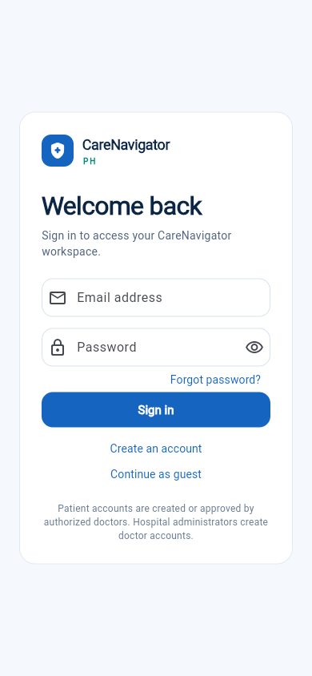
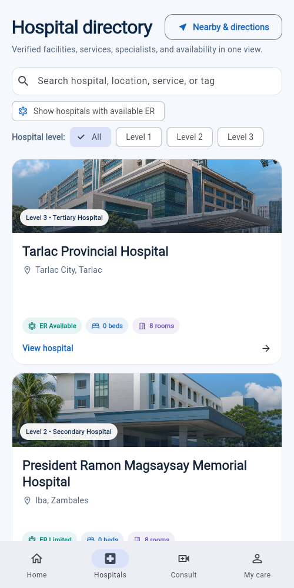
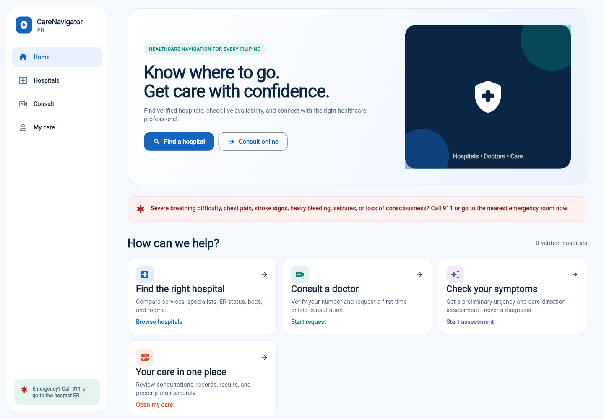

Advanced Mobile ProgrammingDevelopment Progress Documentation
Development progress · revised proposal
CareNavigatorPH
From health uncertainty to verified, clinician-reviewed care.
REVISED APPLICATION CONCEPT
Patients can securely view their confirmed medical records. Doctors can upload or scan medical results, receive preliminary AI-assisted findings, review or correct them, and save confirmed information to the official patient record.
SDG 3 · Good Health and Well-Being
Student
Neil Ardrey Laza
Course / Section
Advanced Mobile Programming / __________
Instructor
____________________________
Date
26 July 2026
Repository
github.com/NotArdrey/CareNavigatorPH
Submission contents
Revised proposal · SDG alignment · revised workflow/mockup · development environment · project structure · initial screens · working navigation · GitHub repository and commits · 100–150 word reflection
CareNavigatorPH1 · Revised Proposal
1. Revised Project Proposal
Application concept
CareNavigatorPH is a Flutter healthcare-navigation and care-record application designed for the Philippine setting. It helps users find verified hospitals, understand where to seek care, request consultations, and keep confirmed health information accessible. The revised concept expands the original proposal by connecting the patient and doctor workflows: a patient can view their own confirmed medical records, while an assigned doctor can upload or scan a medical result, review preliminary AI-assisted findings, and save clinically confirmed information.
Problem being addressed
Patients often receive medical documents from different facilities and may not have one secure place to review them. Doctors also spend time reading result files and transferring verified findings into patient records. Fragmented information can delay follow-up care, cause repeated tests, and make it harder for patients to understand their care history.
Feedback incorporated from Week 1
Revision
How it changes the application
Patient record access
Patients can see their own doctor-confirmed diagnoses, medical records, results, treatment plans, and prescriptions through role-protected access.
Doctor result scanning
Doctors can upload a result image or document, run preliminary analysis, review possible findings, confirm or reject the output, and optionally save the confirmed finding to the patient record.
Objectives
Give patients secure and understandable access to their confirmed medical history.
Support doctors in reviewing uploaded medical results without removing professional judgment.
Connect assessment, hospital discovery, consultation, medical results, and records in one application.
Protect clinical information through role-based access, consent controls, and clinician confirmation.
Target users
Primary users are Filipino patients, caregivers, and doctors. Secondary users include hospital administrators who manage hospital operations and platform administrators who maintain approved facilities and system settings without unrestricted access to clinical records.
CareNavigatorPH1 · Features and SDG
Revised Features and SDG Alignment
#
Core feature
Description
01
Hospital navigation
Search verified hospitals by location, level, service, emergency availability, beds, and rooms.
02
Symptom guidance
Provide preliminary urgency and care-direction guidance with visible emergency warnings.
03
Consultation workflow
Request, schedule, and track professional consultations, messages, and follow-ups.
04
Patient medical records
Allow patients to review only their own authorized and doctor-confirmed clinical information.
05
Doctor result scanning
Upload an image or document, extract or analyze relevant information, then present preliminary possible findings.
06
Clinical confirmation
Require a licensed doctor to review, modify, confirm, or reject AI output before saving an official record.
Sustainable Development Goal
SDG 3
GOOD HEALTH AND WELL-BEING The project supports Target 3.8 on access to quality essential healthcare services. It reduces barriers to finding suitable facilities, promotes timely professional care, and helps patients maintain access to confirmed health information.
Scope, safety, and privacy boundaries
AI output is preliminary and may identify possible findings; it is not an independent diagnosis.
Only an assigned licensed doctor may confirm findings and save them as an official record.
Patients can view their own authorized records; administrative roles do not automatically receive clinical access.
Emergency warning signs direct users to call 911 or go to the nearest emergency room.
Revised success criteria
A successful prototype lets a patient reach their confirmed records, lets a doctor upload and review a result, clearly distinguishes preliminary output from a diagnosis, and saves only doctor-confirmed information to the correct patient profile.
CareNavigatorPH2 · Revised Workflow
2. Revised Workflow and Mockup Evidence
Doctor-to-patient record flow
1 · UPLOADDoctor selects the patient and uploads a JPG, PNG, WebP, or reviewed-text result.
2 · ANALYZEThe application returns a preliminary summary and possible findings.
3 · REVIEWThe doctor compares the output with the original result and clinical context.
4 · SAVEThe doctor confirms or rejects the findings and may save an official record.
5 · VIEWThe patient securely views the confirmed result and record in My Care.
Updated screen evidence

DOCTOR CARE WORKSPACE Role-specific navigation includes Patients, Result review, Records, and Clinical. The patient panel displays doctor-confirmed care history across hospitals.

PATIENT-FACING GUIDANCE The mobile interface uses plain language, emergency warnings, structured inputs, and persistent navigation to Home, Hospitals, Consult, and My Care.
Revision rationale
The revised flow improves continuity: information does not stop at a scan result. A doctor remains responsible for clinical interpretation, the confirmed result can become part of the official record, and the patient can later review that record. This supports transparency while limiting unsafe reliance on automated output.
Mockup status: the report uses implemented responsive screens as the updated mockup evidence. The clinical workspace visibly separates patients, result review, official records, and other doctor actions.
CareNavigatorPH3 · Environment
3. Development Environment

Verification result. Flutter 3.44.1, Dart 3.12.1, Java 21, Android SDK 36, and accepted Android licenses were detected. The repository includes Android and iOS platform projects. The application evidence used in this report comes from the running Flutter web build at desktop and mobile-responsive viewport sizes.
Important submission note: no Android emulator or physical Android device was connected when this PDF was generated. If the instructor requires literal emulator/device proof, replace or supplement this page with a screenshot of the same app running on that device before uploading to Teams.
CareNavigatorPH4 · Structure
4. Application Structure

Clean-code evidence
The codebase uses a feature-first structure for screens and separates shared concerns into models, providers, repositories, routing, theme, and widgets. Assets are declared in pubspec.yaml, while tests and Supabase backend resources remain outside the presentation layer.
CareNavigatorPH5 · Initial UI
5. Initial Screens and Basic User Interface

SCREEN 1 · SIGN IN Secure access for patients and care providers, with clear actions and role-aware account guidance.

SCREEN 2 · HOSPITAL DIRECTORY Verified hospital cards, search, hospital-level filters, ER status, beds, rooms, and nearby directions.
Interface implementation
Uses a consistent blue, teal, white, and light-gray healthcare palette.
Provides readable headings, clear labels, large touch targets, and visible status information.
Adapts between desktop side navigation and mobile bottom navigation.
Includes placeholder and empty states so screens remain understandable before records exist.
Running application proof: these are rendered Flutter interfaces with responsive navigation and populated hospital data, not static wireframe drawings.
CareNavigatorPH6 · Navigation
6. Working Navigation Between Screens

Route
Screen
Connected action
/login
Sign in
Authenticates and opens the correct role workspace.
/home
Home
Links to hospitals, consultation, assessment, and My Care.
/hospitals
Hospital directory
Opens hospital details, map, or consultation path.
/assessment
Symptom navigator
Submits symptoms and links results to matching hospitals.
/care
My Care workspace
Shows role-specific patient, doctor, results, and record tabs.
Implementation note
Navigation is implemented with GoRouter. Public routes remain accessible for discovery, while protected routes redirect unauthenticated users to sign in. The shell changes its available navigation items according to the authenticated role and screen size.
The repository is public and uses the main branch. The GitHub history shows two initial commits dated 19 July 2026, including the project code structure and the Week 1 activity-report work. The configured local origin matches the repository link above.
CareNavigatorPH8 · Reflection
8. Weekly Reflection
This week, I revised CareNavigatorPH by expanding the proposal to include patient access to confirmed medical records and a doctor workflow for scanning and reviewing medical results. I documented the Flutter environment, organized project structure, initial interfaces, role-based navigation, and GitHub history. The main challenge was connecting automated result analysis with medical safety and privacy. I resolved this by treating the generated output as preliminary possible findings, requiring a licensed doctor to verify or reject them before saving anything to the official patient record. I also used role-based access so patients see only their own authorized information. Another challenge was presenting a large application clearly in one document, so I grouped the evidence by requirement and added captions that explain what each screenshot proves. My next step is to capture final Android emulator evidence and continue testing the complete doctor-to-patient record flow.
Word count: 142 words
Deliverables checklist
✓
Revised project proposal
Complete
✓
Flutter project created and running
Web build evidenced
✓
Organized project structure
Complete
✓
Basic UI and initial screens
Complete
✓
Working navigation
Complete
✓
GitHub repository and initial commits
Complete
✓
PDF documentation and repository link
Complete
!
Android emulator or physical-device screenshot
Replace/supplement before submission if required
Final submission reminder
Before uploading to Microsoft Teams: fill in the section and instructor on the cover, confirm the required filename, and add an actual Android emulator or physical-device screenshot if your instructor requires it. All other requested documentation is included.